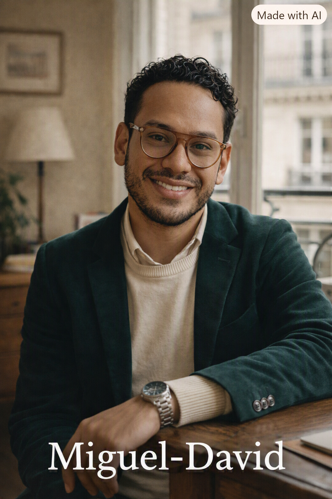

« Chaque vendredi, une conversation. Chaque semaine, une progression. » Un espace intime, interactif et d'exigence éditoriale.

Spécialiste en FLE avec 13 ans de trayectoria internacional y ex-directeur general d'institutions culturelles. Conçu pour un apprentissage vivant, horizontal et affranchi des structures corporatives.
« Ici, on parle français sans peur, entre pairs et passionnés. »
Consignez vos réflexions, interactions et notes personnelles avec l'esthétique du carnet physique et la puissance de Firestore.